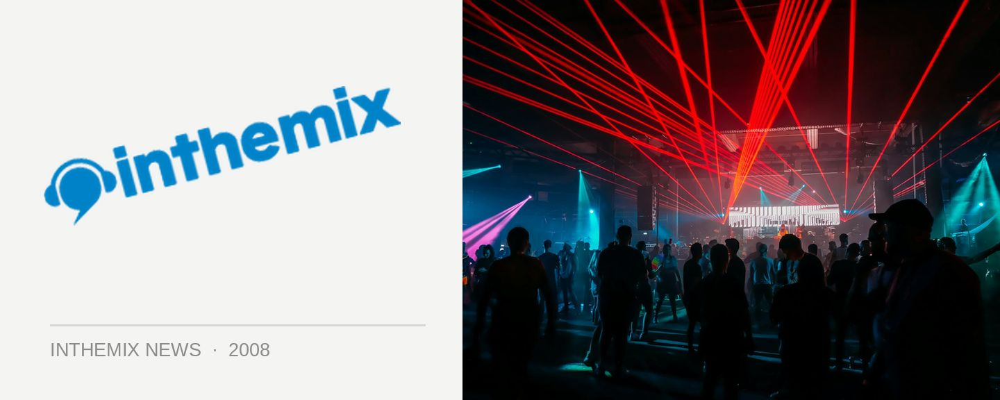

It's a We Love Sounds sideshow bonanza!
As the June long weekend gets closer and we all gear up for the biggest party of the winter season, the We Love Sounds festival, news is starting to trickle down on the opportunities that we’ll have to catch some of these acts in a more intimate setting. So what’s come to light so far? It’s been all the indie/dance acts on the bill who have shown their cards, as well as a certain baile-funk act from Brazil.
First off the bat are !!! (otherwise known as ‘Chk Chk Chk’), one of the finest (and craziest) acts to emerge out of New York recently who bring as certain brand of controlled chaos to their live shows – check out the ITM feature for more info. Next up is The Whip who are one of the rising stars of the indie/dance scene, who’ve just released their debut album X Marks Destination who they put together with a little bit of help from uber-producer Jim Abbiss who’s also worked with the likes of The Arctic Monkeys and The Editors. Have a listen to the ITM feature for more info.
The other member of the indie/dance We Love Sounds clique who’ve just announced sideshows are Grand National – boasting a beautifully layered electronic rock sound that was showcased to perfection on their two albums Kicking the National Habit and A Drink and a Quick Decision, keep an eye out for the upcoming interview on ITM and so far they’ve announced an additional Sydney show.
The last announcement comes from Bonde Do Role, flying in direct from Cuba after unfortunately missing a slew of Australian gigs over the New Year period – because the lead vocalist Marina Vello unceremoniously quit the band. Since then they’ve acquired two fresh MCs in the form of Ana Bernardino and Laura Taylor, and so far we’ve heard news of sideshows in Sydney and Melbourne.
And that’s just getting started. So which of the other acts on the bill will be doing sideshows in the leadup to We Love Sounds? There’s some exciting announcements coming up, so stay tuned to ITM for all the news as it comes to hand.
Catch !!! at the following sideshows…
6th Jun: Prince Bandroom, Melbourne
9th Jun: Metro, Sydney
Catch The Whip at the following hows…
Saturday 31st May: Oxford Arts Factory, Sydney
Catch Grand National at their Sydney sideshows…
Friday 6 June – Oxford Art Factory, Sydney
And Bonde Do Role are so far confirmed to play a sideshow in Melbourne and Sydney…
Friday 6th June – The Forum, Sydney
Sunday 8th June – Prince Bandroom, Melbourne